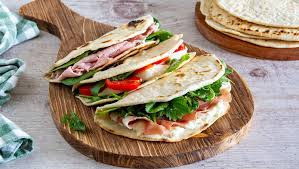

Piadina Romagnola: A Quick and Easy Italian Flatbread
Home Page
Introduction
Piadina Romagnola is a traditional Italian flatbread from the Emilia-Romagna region, known for its soft yet slightly crispy texture. It’s incredibly quick and easy to make, requiring just a few basic ingredients. Typically filled with cheese, cured meats, and vegetables, piadina is perfect for a light lunch, snack, or even a quick dinner.

Ingredients (for 4 piadine)
- 300g (2 ½ cups) all-purpose flour
- 70ml (5 tbsp) olive oil or lard
- 150ml (⅔ cup) water or milk
- ½ teaspoon salt
- ½ teaspoon baking powder (optional, for extra softness)
Filling Ideas:
- Prosciutto crudo & squacquerone cheese (traditional)
- Mozzarella, tomatoes & basil
- Grilled vegetables & ricotta
- Nutella (for a sweet version!)
Step-by-Step Guide
Step 1: Prepare the Dough
- In a bowl, mix the flour, salt, and baking powder.
- Add the olive oil (or lard) and gradually pour in the water or milk.
- Knead the dough until smooth and soft (about 5 minutes).
- Cover with a cloth and let it rest for 15-20 minutes.
Step 2: Roll Out the Piadine
- Divide the dough into 4 equal portions.
- Roll each portion into a thin, round disc (about 2-3mm thick).
Step 3: Cook the Piadina
- Heat a non-stick pan or griddle over medium heat (no oil needed).
- Cook each piadina for 1-2 minutes per side, until golden brown spots appear.
- Flip and cook the other side.
Step 4: Fill and Serve
- Once cooked, fill with your favorite ingredients.
- Fold in half or roll it up and enjoy warm!
Serving Suggestions
Piadina is best served fresh, paired with a light salad or a glass of Lambrusco wine.